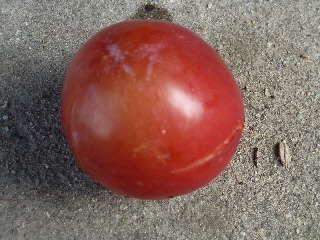
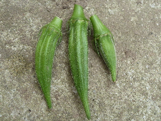
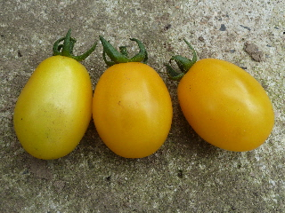
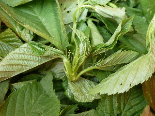
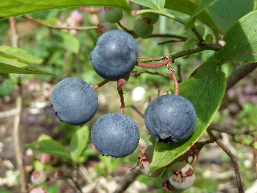
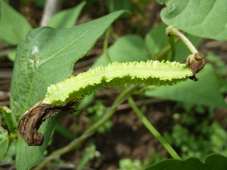
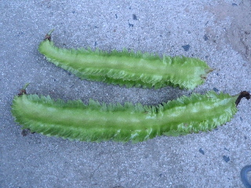
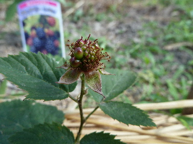
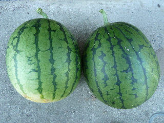
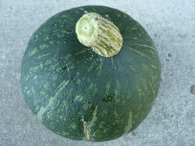

スモモの収穫をしました。
2012/07/01
今年初めてスモモを収穫しました。

まだ色が薄いですが、これくらいでとらないと虫に食べられてしまいます。
2012/07/01
今年初めてスモモを収穫しました。

まだ色が薄いですが、これくらいでとらないと虫に食べられてしまいます。
2012/07/08
オクラが収穫できました。

まだ最初なので、3つしかありません。
少ないので、どうやって食べるか迷いますね。
2012/07/08
ミニトマトの中で私はこれが一番好きです。

黄色いトマトです。
トマト味が濃くていいです。
2012/07/15
モロヘイヤを収穫しました。

まだ丈が小さいですが、きっとドンドン成長すると思うので、多めに刈り取りました。
置いておくとすぐにしおれるので、すぐに料理します。
2012/07/15
ブルーベリーが一部いい色になったので、収穫しました。

今年のブルーベリーはいつもより量が多い気がする。
実も大きい気がする。
木が成長したのかな。
2012/07/15
小さなシカク豆が出来ていました。

もうちょっと大きくなったら食べれますね。
今年初めて植えて作ったので、食べるのが楽しみです。
2012/07/25
巨大になったシカク豆を収穫しました。

大きさは20センチくらいです。
今回は2つ採りました。今のところ、一気に大量には取れないみたいです。
2012/07/29
今年植えたばっかりのブラックベリーに実が出来ていました。

でもなんか格好悪いですね。
植えた時は5センチくらいの小さい苗だったので、今年実がつくとは思っていませんでした。
この実から種を採って植えたら育つかな？
2012/07/29
スイカを2つ収獲しました。

まだまだ畑に小さいのがあるので、しばらくの間食べれそうです。
2012/07/29
固くてしっかりしたカボチャが取れました。

美味しいといいな。ホクホクで甘いのを期待します。
過去の日記
熱中症に注意しましょう。